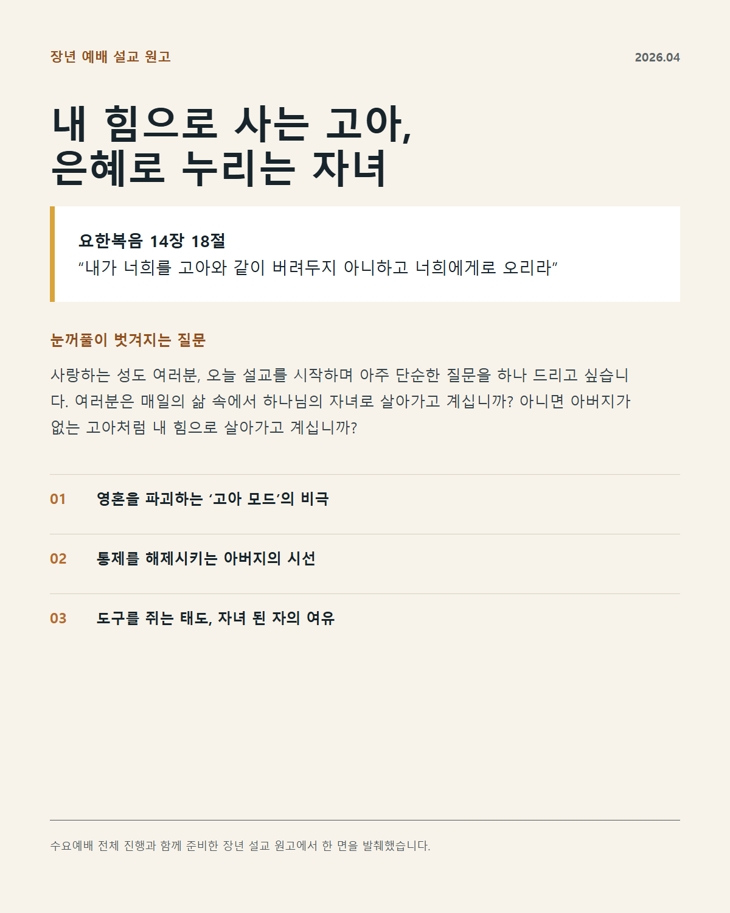
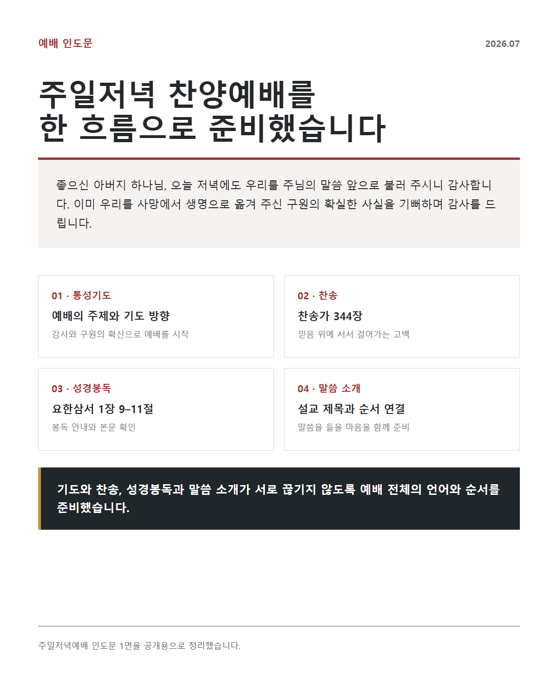
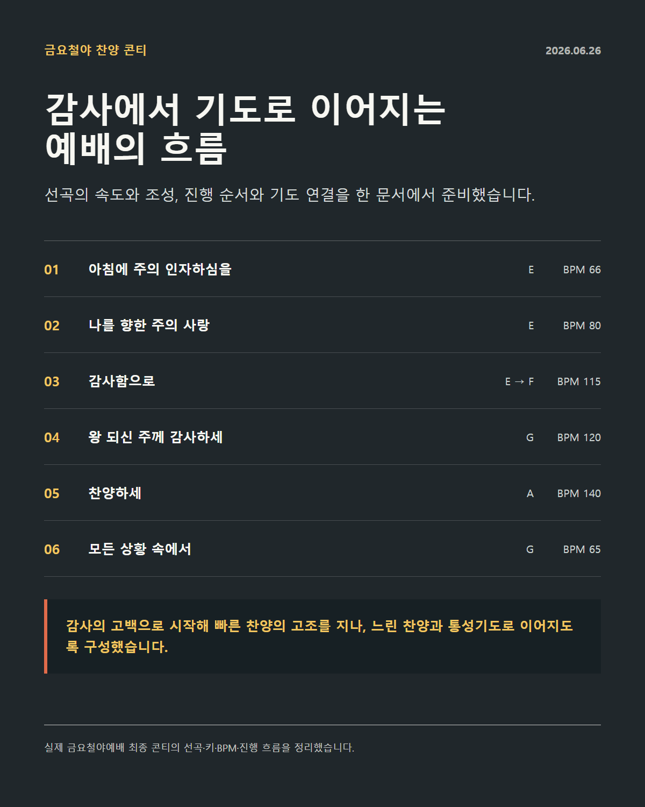
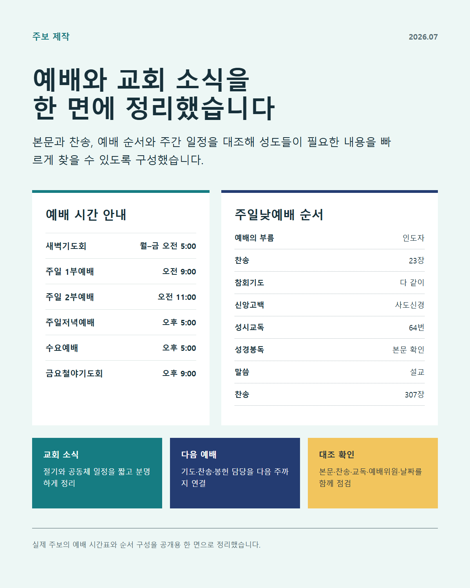
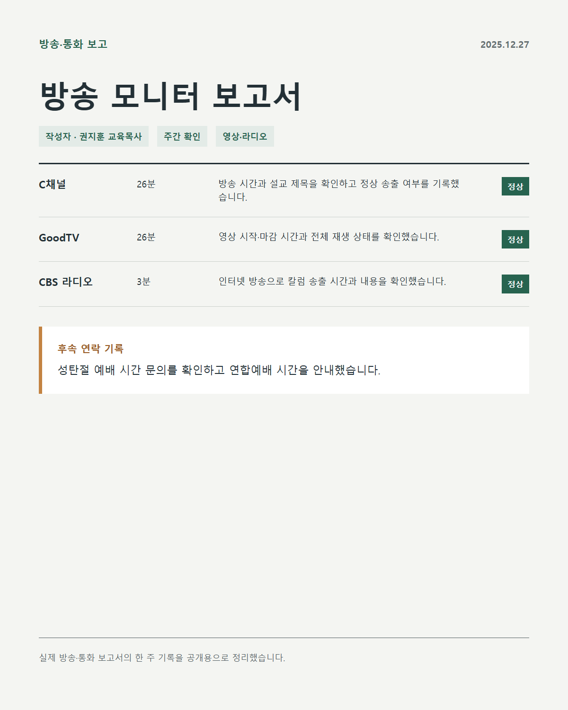
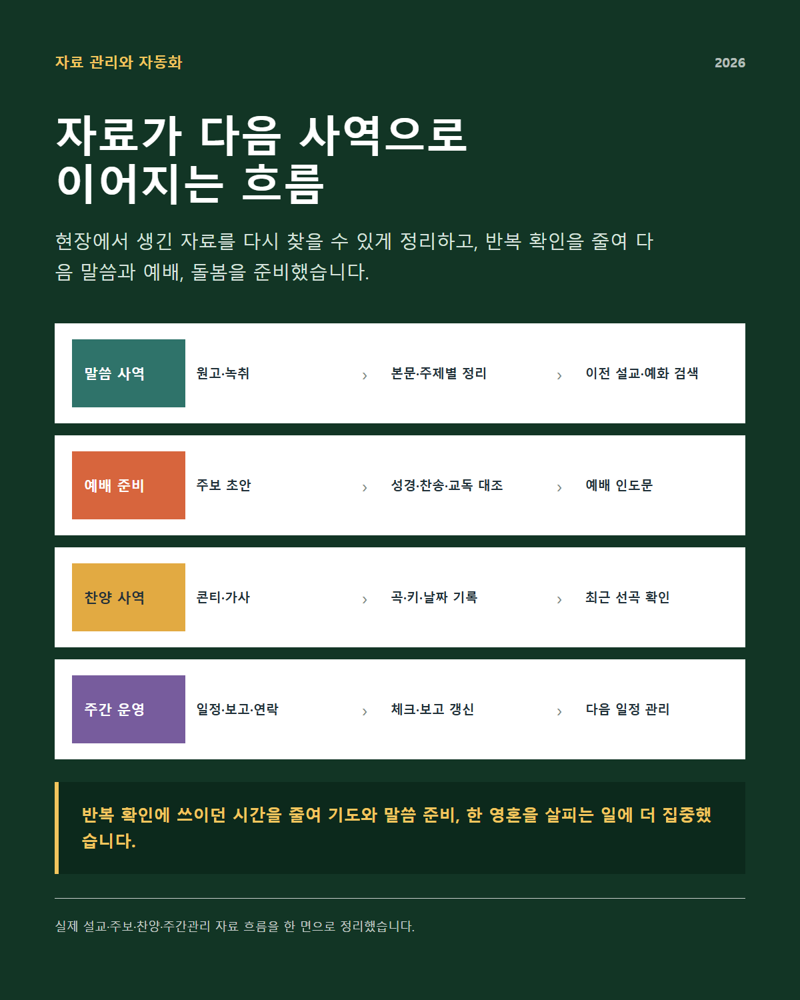
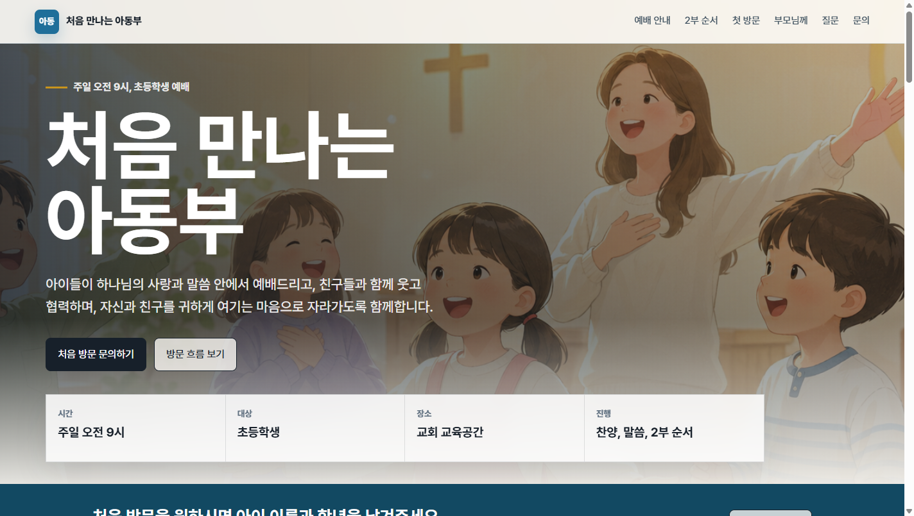

살아 있는 말씀
말씀은 하나님께서 자기 백성에게 음성을 들려주시고 삶 가운데 베푸신 은혜를 깨닫게 하시는 살아 있는 말씀이라고 믿습니다.
신앙 배경
대학 시절 네비게이토 선교회에서 말씀을 배우고 신앙생활을 이어오신 부모님 아래에서 자랐습니다. 두 분이 말씀을 암송하고 매일 아침 경건의 시간을 갖는 모습을 보며, 하나님과 말씀은 제게 자연스러운 일상의 일부가 되었습니다.
고등학교 시절에는 SFC를 통해 성경을 배우며 신앙생활에 스스로 관심을 갖기 시작했습니다. 가정에서 익숙하게 접했던 신앙이 말씀 앞에서 질문하고 응답하는 제 자신의 믿음으로 자라기 시작한 때였습니다.
제가 사역을 시작한 출발점도 말씀 가운데 깨닫게 하신 하나님의 사랑에서 누린 기쁨이었습니다. 그 기쁨에서 출발해 아이들과 청소년들이 말씀을 통해 하나님을 인격적으로 알아가고, 자신의 감정과 관계, 배움과 진로를 하나님 앞에서 바라보도록 설교와 예배, 2부 활동과 돌봄을 이어 왔습니다. 교회에서 들은 말씀이 각자의 일상과 선택으로 연결되도록 사역해 왔습니다.
목회 철학
듣는 사람의 눈높이에서 시작하되 말씀의 본질은 가볍게 만들지 않고, 예배에서 나온 한마디를 다음 주의 기도와 대화까지 이어가는 일을 중요하게 여깁니다.
말씀은 하나님께서 자기 백성에게 음성을 들려주시고 삶 가운데 베푸신 은혜를 깨닫게 하시는 살아 있는 말씀이라고 믿습니다.
아동에게는 이미지와 움직임을, 청소년에게는 학업과 관계의 언어를 사용하되 마지막에는 말씀을 분명히 붙잡도록 이끕니다.
설교와 2부 활동, 교사와의 대화, 새친구 정착이 따로 움직이지 않고 다음 만남까지 이어지도록 설계합니다.
반복 업무를 정확한 흐름으로 정리하여 목회자와 교사가 기도하고 한 영혼을 기억할 시간과 마음을 지키고자 합니다.
사역 경력
청년 시절 교사와 찬양인도자로 헌신한 때부터 신학대학원 과정, 전도사 사역, 목사 안수와 교육목사 사역까지 시간순으로 정리했습니다.
말씀과 예배의 현장
장년 설교의 본문과 구조를 세우고, 기도와 찬송, 성경봉독과 말씀 소개가 이어지는 예배 인도문을 작성했습니다. 금요철야에서는 선곡과 키, BPM과 기도 연결까지 한 흐름으로 준비했습니다.

장년 예배 · 설교
질문으로 시작해 고아처럼 살아가는 방식과 아버지 하나님의 시선, 자녀 된 삶의 여유로 말씀의 흐름을 구성했습니다.

장년 예배 · 인도
기도와 찬송, 성경봉독과 말씀 소개가 끊기지 않도록 예배 전체의 언어와 순서를 작성했습니다.

금요철야 · 찬양인도
감사의 고백에서 빠른 찬양의 고조를 지나 느린 찬양과 통성기도로 이어지는 흐름을 준비했습니다.
다음세대 교육 설계
아동부 인쇄물, 청소년부 활동지, PPT 디자인을 하나씩 선정했습니다. 말씀의 주제가 시각자료와 질문, 예배 후 활동과 후속 대화까지 이어지도록 직접 설계하고 제작했습니다.

아동부 · A3 인쇄물
세 가지 미션과 축복 스티커를 거쳐 모두가 함께 정원판을 완성하도록 구성했습니다.

청소년부 · 활동지
학생의 생각과 관계, 감정, 학업과 진로를 9개 질문과 말씀 선택, 한 주의 작은 실천으로 연결했습니다.

청소년부 · PPT 디자인
휴대전화 상태메시지와 말씀 DM을 시각 언어로 삼아 현재의 마음을 표현하고 말씀을 선택하도록 구성했습니다.
교회 운영과 자동화
주보의 본문과 찬송, 예배 순서와 일정을 대조하고, 방송 상태와 후속 연락을 보고했습니다. 설교·주보·찬양·주간관리 자료는 다음 말씀과 예배, 돌봄을 준비하는 흐름으로 이어 왔습니다.

예배 행정 · 주보
본문과 찬송, 성시교독, 예배위원, 날짜와 교회 소식을 대조해 성도들이 필요한 내용을 빠르게 찾도록 정리했습니다.

주간 행정 · 보고
영상과 라디오의 시작·마감 시간, 설교와 칼럼 제목, 정상 송출 여부와 문의 처리를 매주 확인했습니다.

자료 관리 · 자동화
원고와 녹취, 주보와 콘티, 일정과 보고를 분류·대조·검색·갱신하는 흐름으로 연결했습니다.
세심히 살피고 기도로 이어 온 돌봄
아이들이 건넨 말뿐 아니라 예배와 활동에서 보인 행동과 표정, 참여 방식, 친구·교사와 관계 맺는 방식까지 세심하게 살피고 기억했습니다. 이를 날짜별로 기록하며 아이 한 사람을 기억하고 구체적으로 기도했습니다. 하나님께 다음 만남과 사역의 방향을 구하고, 교사와 함께 필요한 돌봄을 이어 왔습니다.
살핌에서 기도와 다음 사역까지
작은 한마디와 현장에서 보인 행동·표정·반응을 날짜별로 기록하고, 기도 제목과 교사 협력, 다음 사역에서 살필 방향까지 이어 왔습니다.

첫 방문 가정을 위한 안내
예배 전 준비부터 2부 활동, 첫 방문의 자리 안내와 다음 연결까지 한 화면에 정리했습니다.
교단적 방향
말씀과 신앙공동체 안에서 받은 신앙의 유산을 책임 있는 목회로 이어가고자 합니다.
대학 캠퍼스 네비게이토 선교회에서 훈련받은 부모님 아래에서 자라며 말씀 암송과 매일의 경건 생활을 가까이에서 보았습니다. 또한 고등학교 시절 SFC를 통해 말씀을 배우고 신앙생활에 관심을 갖게 되면서, 다음세대 시기에 만난 말씀과 신앙공동체가 한 사람의 믿음을 세우는 데 얼마나 중요한지를 경험했습니다.
사역을 이어 오면서 개인의 열심과 은사만큼이나, 목회자와 교회가 공동의 신앙고백과 질서 안에서 서로 책임을 나누는 일이 중요하다는 생각이 깊어졌습니다. 특히 다음세대 사역은 한 부서나 한 사역자의 노력에 머물기보다 교회와 가정, 교육 체계가 함께 연결되어야 지속될 수 있음을 배웠습니다.
그러한 점에서 말씀 중심의 신앙, 개혁주의 신앙고백, 교회의 공동체적 책임과 연대를 중요하게 여기는 장로교 전통은 제가 경험해 온 신앙의 배경과 앞으로 이어 가고 싶은 목회의 방향에 맞닿아 있다고 생각합니다.
지금까지의 사역 경험을 소중히 이어 가면서, 장로교회의 신앙과 질서 안에서 목회자로서 더 분명한 책임을 배우고 다음세대를 건강하게 세우는 사역을 감당하고자 교단 이적을 생각하게 되었습니다.